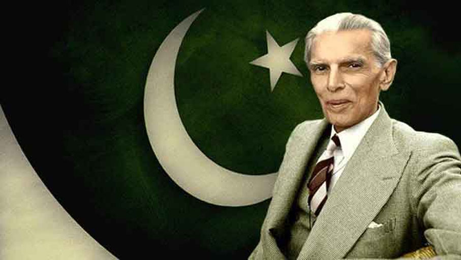

Quaid-i-Azam ("Great Leader") and Baba-i-Qaum, ("Father of the Nation")

There is no power on Earth that can undo Pakistan
Fourteen Points of Jinnah
1 - A uniform measure of autonomy shall be guaranteed to all provinces;
2 - All legislatures in the country and other elected bodies shall be constituted on the definite principle of adequate and effective representation of minorities in every province without reducing the majority in any province to a minority or even equality;
3 - In the Central Legislature, Muslim representation shall not be less than one third;
4 - Representation of communal groups shall continue to be by means of separate electorate as at present: provided it shall be open to any community, at any time to abandon its separate electorate in favour of a joint electorate.
5 - Any territorial distribution that might at any time be necessary shall not in any way affect the Muslim majority.
6 - Full religious liberty, i.e. liberty of belief, worship and observance, propaganda, association and education, shall be guaranteed to all communities.
7 - Sindh should be separated from the Bombay Presidency.
8 - Reforms should be introduced in the North West Frontier Province and Balochistan on the same footing as in the other provinces.
9 - Muslims should be given adequate share, along with the other Indians, in all the services of the state.
10 - he constitution should embody adequate safeguards for the protection of Muslim culture and for the protection and promotion of Muslim education, language, religion, personal laws and Muslim charitable
11 - No cabinet, either central or provincial, should be formed without there being a proportion of at least one-third Muslim ministers.
12 - No change shall be made in the constitution by the Central Legislature except with the concurrence of the States constituting the Indian Federation.
13 - he form of the future constitution should be federal, with the residuary powers vested in the provinces;
14 - No bill or resolution or any part thereof shall be passed in any legislature or any other elected body if three fourths of the members of any community in that particular body oppose it as being injurious to the interests of that community.
“As you are the only Muslim in India today to whom the community has a right to look up for safe guidance through the storm which is coming to North-West India, and perhaps to the whole of India.”
-- Dr. Allam Muhammad Iqbal
If you have time, you should read more about this incredible human being on his Wikipedia entry.